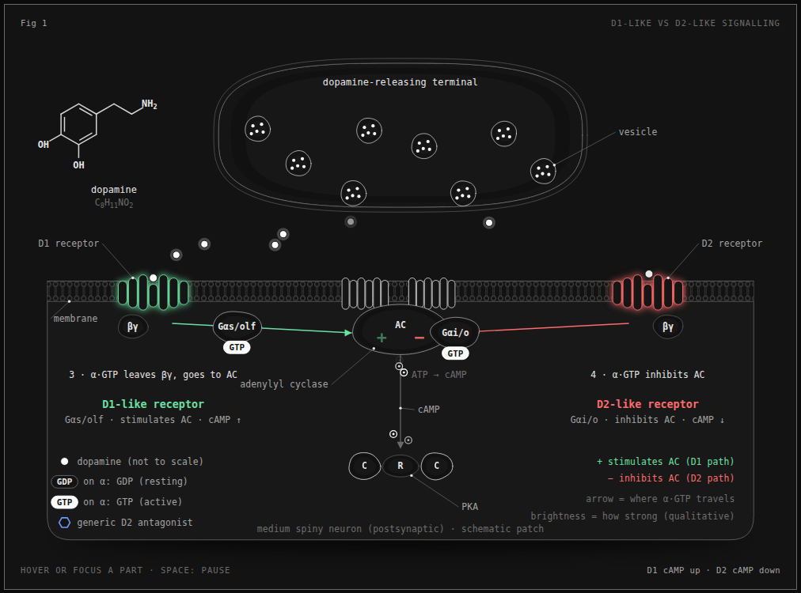
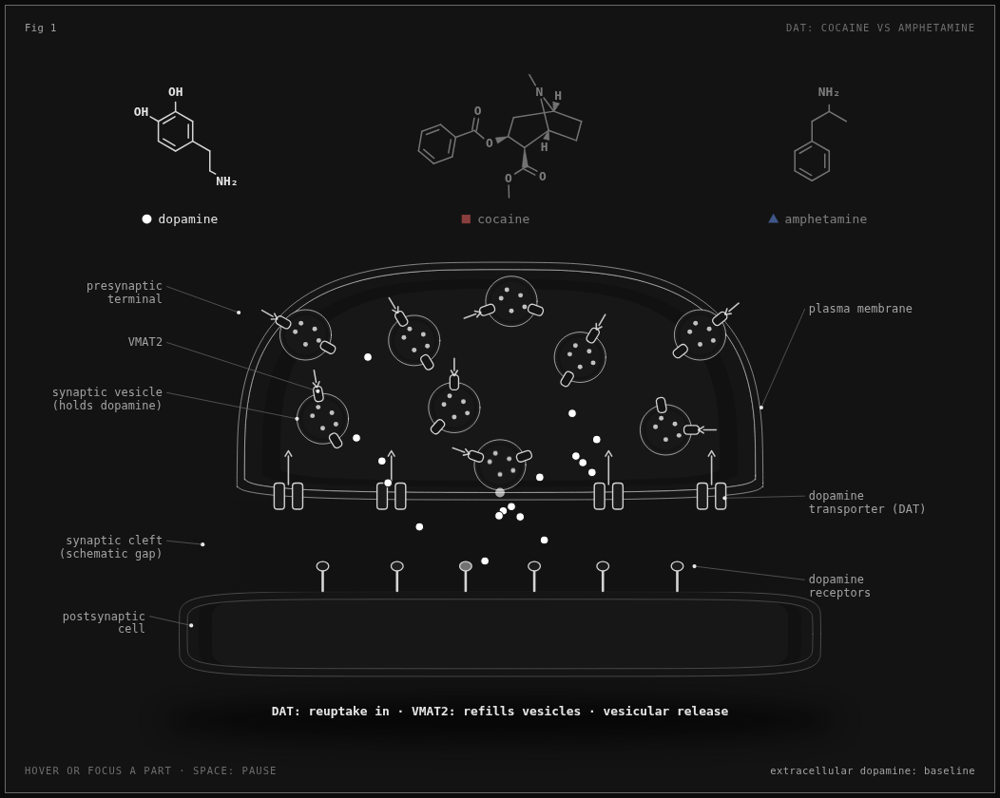
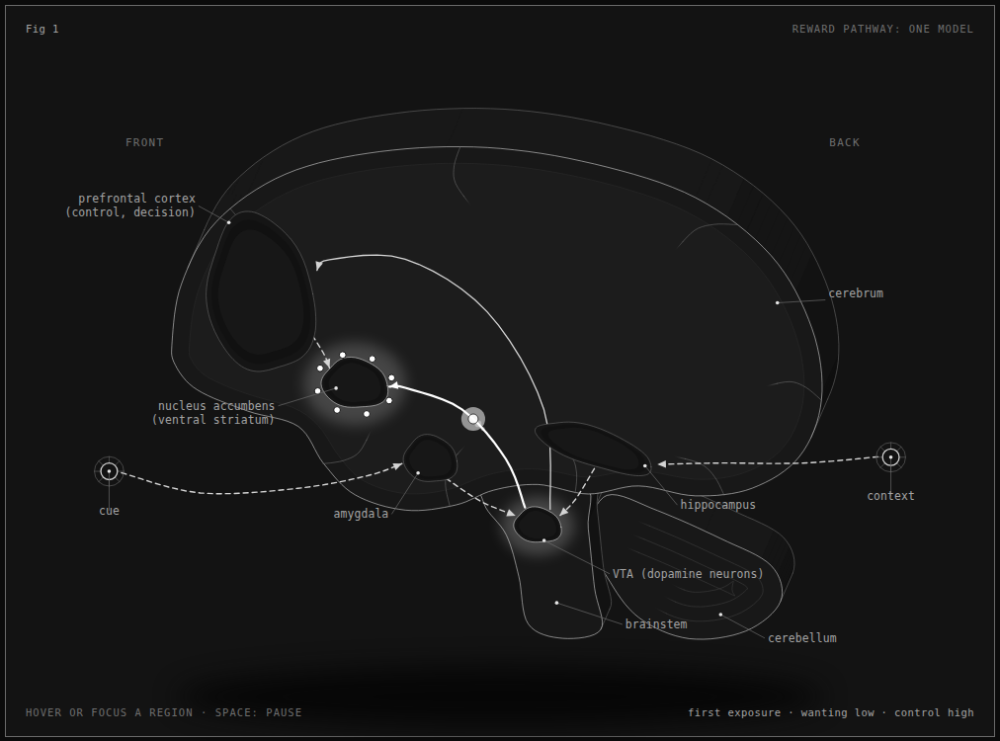
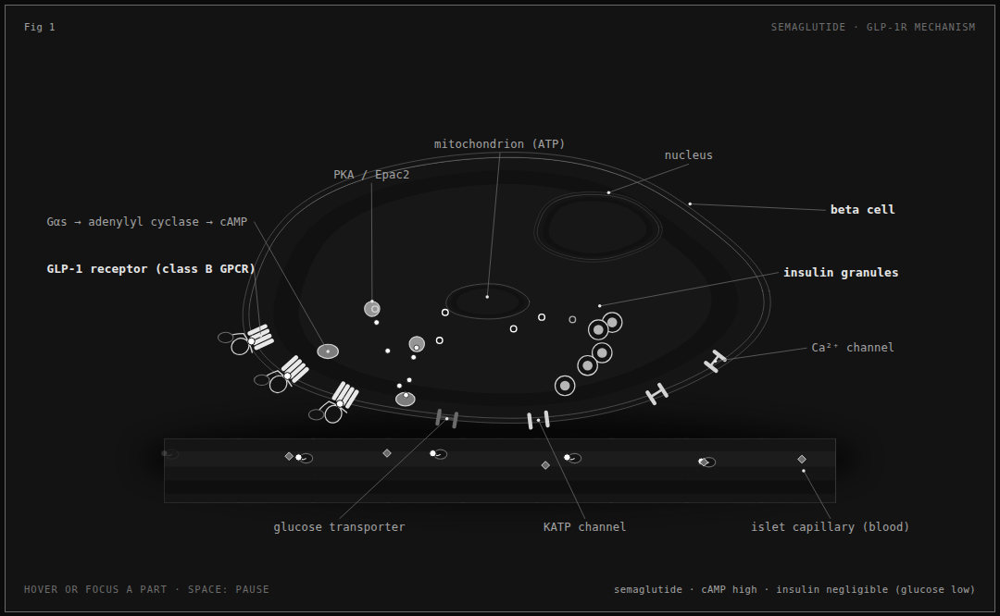
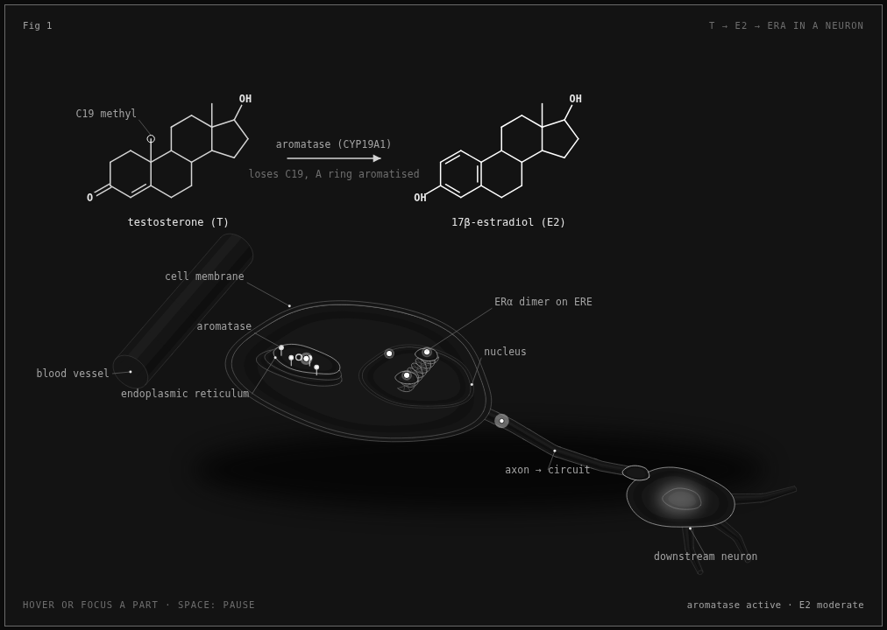
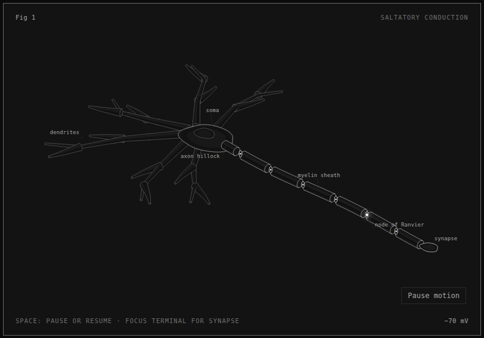

biology-anatomy
Ask Claude for a biology figure. Get an interactive, sourced, isometric one.
A Claude Code skill. Real structures, a mechanism you can toggle, and a citation for every number on screen.
npx skills add Garinmckayl/biology-anatomy -g -a claude-code
Live figures





The rules it works to
- Real structure first. A metaphor is allowed only when labelled as one.
- Every number is cited, with species, conditions and units. Unverified numbers are left out.
- Honest about certainty. Established biology, one leading model, rodent work and human work are kept apart.
- Mechanism only for drugs. No doses, routes, schedules or recommendations. Educational, not medical advice.